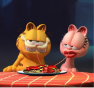

ARLENE
Uma gata rosa é namorada de Garfield. Aparece esporadicamente, já que Garfield é muito visto paquerando outras gatas.
Em Garfield: Fora de Casa, o amado gato de estimação laranja (dublado por Chris Pratt) está de volta para mais uma aventura inesquecível: após reencontrar seu pai, o gato de rua Vic (dublado por Samuel L. Jackson), que não via há muito tempo, Garfield e o cãozinho Odie acabam se envolvendo em um arriscado assalto.
Uma gata rosa é namorada de Garfield. Aparece esporadicamente, já que Garfield é muito visto paquerando outras gatas.